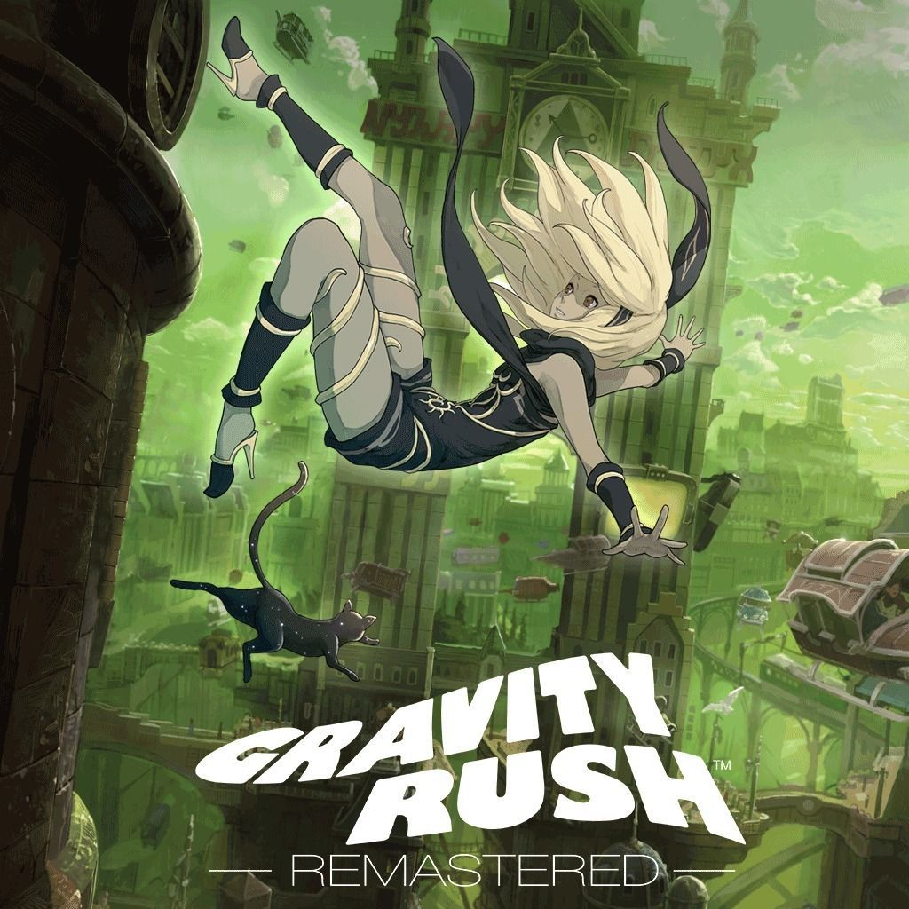

Fran Bow
Fran Bow es un juego de aventura gráfica de terror psicológico que narra la historia de Fran, una niña de 10 años que sufre un trauma severo tras presenciar el asesinato brutal de sus padres. Tras esto, es internada en un asilo mental infantil donde es medicada con drogas experimentales
La vida de Fran da un vuelco al encontrar a sus padres desmembrados. Queda en estado de shock y huye al bosque junto a su único amigo, su gato negro Señor Medianoche

Rayman origins
Rayman Origins es un juego de plataformas en 2D donde Rayman, su amigo Globox y dos Diminutos deben salvar el "Claro de los Sueños". Todo comienza cuando sus molestos ronquidos despiertan a las criaturas de la Tierra de los No-tan-muertos, desatando una invasión de monstruos y pesadillas que encierran a las hadas y a los Electoons

Gravity Rush Remastered
Gravity Rush es un juego de acción y aventura donde controlas a Kat, una joven con amnesia que descubre que puede alterar la gravedad a su alrededor. Con la ayuda de un misterioso gato mágico, debe proteger la ciudad flotante de Hekseville de unas terroríficas criaturas llamadas Nevi, mientras descubre los misterios de su propio pasado.
La jugabilidad es su punto más fuerte: el control de la gravedad no es solo para volar, sino que te permite "caer" en cualquier dirección, caminar por las paredes, o convertir el cielo en tu nuevo suelo para explorar el mundo abierto